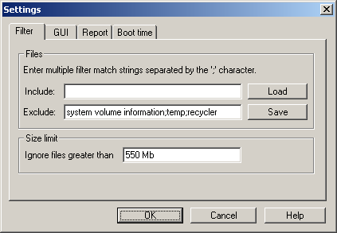
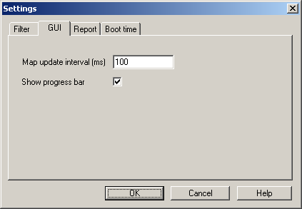
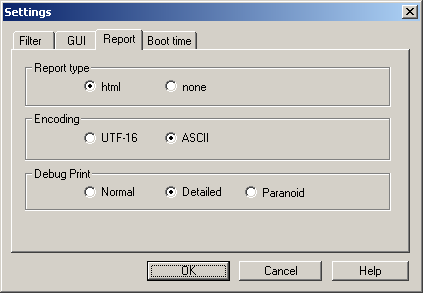
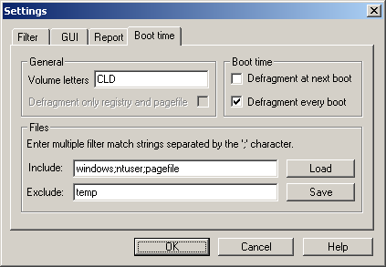
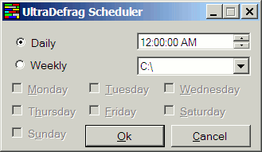

UltraDefrag
Manuel utilisateur
Écrit par Justin
Dearing
Traduction française :
Olivier
Dabazach
Qu’est-ce qu’UltraDefrag?
UltraDefrag est un programme de défragmentation de
disque « open source » pour les systèmes d’opération Windows NT 4.0 et
supérieurs. Il utilise les mêmes interfaces de programmation (API) que beaucoup
d’autres utilitaires de défragmentation, qu’ils soient « open source »
ou non.
Cependant, UltraDefrag possède deux caractéristiques uniques. La première
est sa construcion autour d’un noyau logiciel qui assure le plus gros du
travail, la seconde est sa capacité à être lancé au démarrage (« boot »)
de la machine, un peu à la manière de chkdsk. Ces deux spécificités
permettent une défragmentation plus rapide, mais aussi la possibilité de défragmenter
tous les fichiers, y compris les fichiers systèmes.
UltraDefrag est compatible avec les formats
FAT12/16/32, NTFS et UDF( Vista). Le format de fichier UDF est réservé aux
disques optiques tels les DVD qui sont réinsciptibles (contrairement à ceux
respectant la norme ISO 9660).
Sa capacité à défragmenter les volumes lors du
démarrage rend possible le déplacement de fichiers systèmes qui sont d’ordinaire
verrouillés par le système d’exploitation, en particulier les fichiers recensés
par le registre Windows (« registry hives ») ainsi que le fichier
d'échange (« pagefile »).
UltraDefrag défragmente également les fichiers et
dossiers compressés par le système NTFS. La défragmentation des les disquettes
est possible, même cela n’est pas d’une grande utilité !
UltraDefrag existe en versions compilées
spécialement pour Windows 32 et 64 bits.
Installation d’UltraDefrag
Vous pouvez télécharger la dernière version du
fichier d’installation d’UltraDefrag sur la page du projet : http://ultradefrag.sourceforge.net/.
Il suffit de lancer l’exécutable,
sans qu’il soit nécessaire de redémarrer le système. Sur certains systèmes,
vous devrez posséder les droits d’administrateur pour installer et exécuter le
logiciel.
Utilisation d’UltraDefrag
IMPORTANT : Les logiciels antivirus doivent être inactifs pour pouvoir
utiliser UltraDefrag.
Version ligne
de commande (console)
La version en ligne de commande (udefrag.exe) est
placée dans le dossier system32 (C:\WINDOWS\system32 par exemple) par le
programme d’installation. Ceci afin que vous puissiez la lancer en tapant udefrag
dans la boîte ouverte par « démarrer/exécuter »,
ou par « démarrer/tous les programmes/accessoires/invite de commandes ».
Utilisation
La syntaxe de la version en lignes de commandes
nécessite la saisie d’une option ainsi que de la lettre désignant un lecteur
physique.
Les trois options :
udefrag -? rappelle
les différentes options
udefrag –a C : analyse du disque
C :
udefrag –c C : compactage du disque
C :
udefrag C : défragmentation
du disque C :
Si la commande n’est suivie que de la lettre désignant le lecteur, UltraDefrag lancera
la défragmentation effective du lecteur.
Une fois l’opération terminée, ou arrêtée par CRTL+C, le programme affiche les
résultats dans la console.
Si vous décidez d’arrêter l’opération en cours par CTRL+C ou en fermant la fenêtre
de l’application console, UltraDefrag se terminera en sécurité et sans destruction
de données.

L’Application
en version ligne de commande après une analyse terminée.
La version Windows
La version Windows consiste en une fenêtre de
taille fixe et une boîte « à propos ».
En voici une copie d’écran ainsi que quelques explications:

1. Liste des volumes (en haut).
Cette liste affiche tous les lecteurs de la machine accessibles au programme.
Les champs suivants sont affichés :
1. Volume (Lettre du
lecteur)
2. Status (état) : description de l’action en
cours sur le volume (Analyse, défragmentation, etc.).
3. File Sytem Type de système de fichiers
utilisé par le volume.
4. Total Size (Taille
totale du volume)
5. Free (Espace libre)
6. Percent (Pourcentage du
volume libre)
2. Case à cocher « Skip Removeable Media : » (sauter les périphériques utilisant des support
amovibles)
3. Cluster Map (Carte des
blocs) Il s’agit d’une représentation des blocs (« clusters ») de l’unité
à l’aide de codes de couleur.
Les codes de couleurs sont explicités dans la boîte
de dialogue « à propos ».
4. Rescan Drives (scruter les lecteurs à nouveau) (Ctrl+R) Ce bouton sert à mettre à jour la liste des lecteurs en cas
d’ajouts ou de retraits.
5. Boutons
Actions déclenchées par les boutons du bas (traductions et raccourcis
entre parenthèses) :
1. Analyze (Analyse / Ctrl+A) : scanner le(s) volume(s) afin de déterminer leur(s)
taux de fragmentation.
2. Defrag (Défragmenter / Ctrl+D) : comme son nom l’indique !
3. Compact (Compacter
/ Ctrl+C) : déplacer tous les fichiers au début d’une partition en les
défragmentant si possible.
Cette commande ne fonctionne pas avec les volumes formatés en FAT, ce système
ne permettant pas de déplacer l’emplacement physique des dossiers.
4. Pause (Ctrl+P) :
met en pause les opérations d’analyse(s) ou de défragmentation(s) en cours.
5. Stop (Ctrl+S) Arrêt
des opérations d’analyse ou de defragmentation en cours.
6. Fragmented (Fragmentés
/ Ctrl+F) Affiche une rapport sur les fichiers fragmentés sur le système. Ce
rapport, bien que très court, est utile. Il est généré par le pilote de la même
manière pour toutes les versions
du programme.
7. Settings (Réglages
/ Ctrl+T) Affiche la boîte de dialogue des réglages du programme.
1. Filter (filtre)

traduction :
files = fichiers
« enter multiple filter match strings separated by the ';' character »
= entrer les chaînes de filtrage séparées par le caractère « ; »
(point-virgule).
include = inclure ; exclude = exclure
Size limite = limite de taille
Ignore files greater than… = Ignorer les fichiers dont la taille dépasse…
Vous specifier les fichiers à inclure ou exclure, ainsi qu’ignorer les fichiers
d’une taille donnée
Les motifs entrés dans les zones inclure/exclure s’appliquent sur la totalité
du chemin. Par exemple, si vous spécifierz « temp\ » dans la partie « exclude »,
vous excluez les deux répertoires (%WINDIR%\temp) et le dossier des fichiers
temporaires d’Internet Explorer.
Pour la taille maximale des fichiers, vous avez le choix des suffixes Kb ou Mb ou
Gb ou Tb (en français : Ko, Mo, Go, To)
2. GUI (Graphic User Interface = « interface
graphique utilisateur »)
Map update interval (ms) = Intervalle de rafraîchissement de la carte
(millisecondes) : indiquez ici la fréquence de rafraîchissement désirée.
Show progress bar = « montrer la barre de progression » : cette
case à cocher vous permet de choisir si la barre de progression doit s’afficher
au bas de la fenêtre principale.

3. Report (Rapport) : Spécification
des réglages pour la génération des rapports.

1. Report Type : Format du
rapport - html ou aucun (none).
2. Encoding (Encodage) UTF-18
ou ASCII.
En général, le codage ASCII s’affichera mieux sur Internet Explorer et UTF-16 sur
FireFox.
Le format UTF-16 est nécessaire pour afficher correctement les caractères
asiatiques japonais et chinois.
3. Debug Print (Impression
de rapports d’erreur) : normal, détaillé (detailed) ou paranoïaque
(paranoid).
Normal : messages utiles uniquement.
Détaillés : Génère un rapport d’erreurs à envoyer à l’auteur.
[NDT : Paranoid n’est pas documenté].
4. « Boot time » (démarrage) Réglages pour le scan au démarrage à l’aide de l’éxécutable
en version native.

1. « Drive letters » (Lettres des lecteurs) : les lecteurs à
scanner.
2. « Defragment at next boot »
(Défragmenter au prochain démarrage)
et « Defragment every boot » (Défragmenter à chaque démarrage)
Cocher ces cases si vous souhaitez effectuer
l’action indiquée.
3. Include and Exclude
file filters. (Fitres d’Inclusion et d’Exclusion de fichiers)
Leurs utilisation est la même que
celle décrite précédement.
8.
About (A propos) / F1 Affiche la boîte « a propos »
Cette fenêtre vous permet en particulier d’afficher la légende de couleurs pour
la carte des blocs (clusters).
Certaines catégories ont une couleur avec une variante claire ou foncée qui
indiquent les fichiers dont la taille est inférieure (clair) ou supérieur
(foncé) au seuil éventuellement fixé dans la partie « size limit/ limite
de taille » des réglages.

Fragmented = fragmentés ; unfragmented = défragmentés ; Free = place
libre ; Directory = dossier ; Compressed = compressé ; System =
Système ; MFT (NDT : Master File Table , table de fichiers
maître : information détaillées sur les fichiers en NTFS)
The darker color represents files above the size threshold = « la couleur
la plus sombre représente les fichiers au-dessus de la taille de seuil ».
1. Desactivate your virus scanner for better performances = « désactiver
votre antivirus pour de meilleures performances ».
2. Directories on FAT volumes cannor be moved = « les dossiers sur les
volumes FAT ne peuvent être déplacés ».
3. System
files will nor be moved. Run the boot time
scan to defragment system files = « les fichiers systèmes ne seront pas déplacés.
Lancer le scan au démarrage pour défragmenter les fichiers systèmes ».
6. Barre de progession au bas de la fenêtre: Cette barre affiche la progression des tâches d’analyses, de
compactages ou de defragmentations en cours. Si vous sélectionnez un second
volume, cette barre disparaîtra.
Analyse au
démarrage (« Boot time scan »)
UltraDefrag comprend un nouveau mode permettant
son lancement au démarrage de la machine, d’une manière similaire à chkdsk. En
cela, il s’agit d’une « application native ».
[A FAIRE : écrire cette section]
Le rapport
A chaque fois que vous lancez une analyse, un
compactage ou une défragmentation, un fichier de rapport concernant tous les
fichiers est créé.Ce rapport comporend les champs suivants :
1. Number of fragments (Nombre de fragments).
2. Filename (Nom de fichieer)
3. Comment (Commentaire) Ce
champs peut être vide ou contenir l’une des ces trois valeurs :
1. [OVR] Le fichier
dépasse la limite.
2. [DIR] L’objet est un
dossier.
3. [CMP] Fichier
compressé.
Lancement de
défragmentations plannifiées.
La version en ligne de commandes peut être lancée
par le système des tâches plannifiées. L’ajout d’une plannification d’UltraDefrag est simlifiée grâce à un
utilitaire nommé UltraDefrag Scheduler.NET. Cette petite application nécessite
Microsoft Framework 2.0 pour fonctionner. L’interface simplifiée comporte 4
réglages.

- Les puces permettent
de choisir si l’on veut lancer UltraDefrag quotidiennement (Daily) ou
seulement certains jours de la semaine (Weekly).
- Heure de lancement .
- Lettre du lecteur à
scanner.
- Jours de la semaine si
« weekly » est coché. (Monday = lundi, Tuesday = mardi, Wednesday = mercredi, Thursday =
jeudi, Friday = vendredi, Saturday = samedi , Sunday = dimanche)
Comment cela
fonctionne
Le ytravail de déplacement des fichiers vers
différents clusters est assuré par l’API Windows. Ce qui rend UltraDefrag supérieur
à la défragmentation Windows est qu’il utilise son propore algorithmze pour
déterminer où placer les fichiers. En fait, le véritable travail est fait par le
pilote du noyau ultradfg.sys. Cela améliore la performance du fait qu’il n’y a
pas de bascules entre le mode utilisateur et le mode noyau.
Obtention de
la source
La source d’UltraDefrag est disponible par inscription.
L’adresse est : https://ultradefrag.svn.sourceforge.net/svnroot/.
Le programme est écrit en C. Le code est très clair et compréhensible. Pour créer
l’exécutable, vous aurez besoin dun complitauer et du « Windows Driver
Development Kit » (DDK).
Rapports d’erreurs
Merci de bien vouloir nous faire
part de tous les problèmes et « bugs » en suivant ce lien : sourceforge
bug tracker.
NOTE : Merci
de joindre les renseignements ci-dessous dans votre rapport d’erreurs :
- Si vous obtenez un
écran bleu en lançant UltraDefrag, merci d’inclure les parties importantes
du message que vous obtenez.
- Si UltraDefrag « plante »
sans planter le système, lancez l’application système DebugView avant de
lancer UltraDefrag et joignez les 200 derniers messages significatifs (ou
moins).
DebugView peut être téléchargé ici : http://www.microsoft.com/technet/sysinternals/Miscellaneous/DebugView.mspx - Pour les erreurs
affichées à l’écran, merci de joindre une copie écran.
Liens :
·
La page d’UltraDefrag Le site UltraDefrag (anglais)
·
Article Wikipedia sur
la défragmentation (Français)
·
L'article
en anglais sur Softpedia (UltraDefrag)
·
Windows Driver
Development Kit (DDK)
·
article
microsoft sur Sysinternals on Native Executables
|
|
|